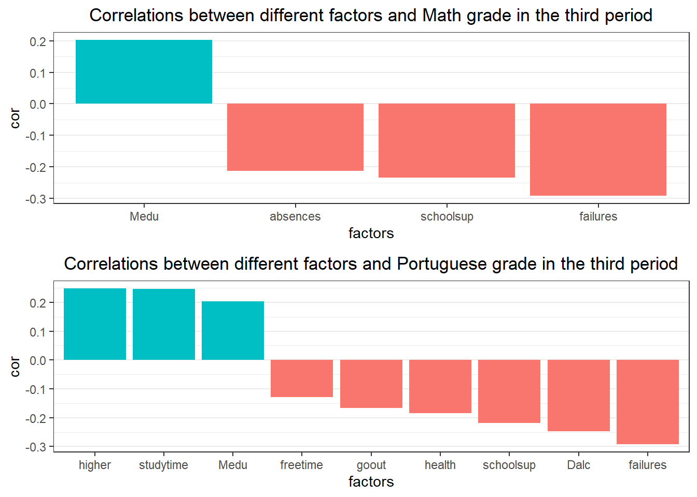
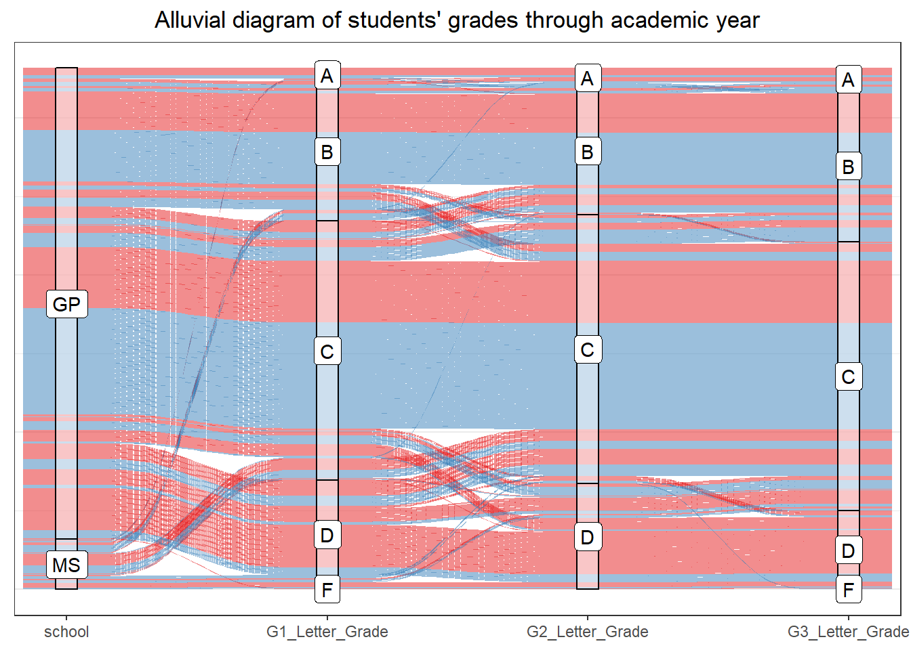

Chapter 5 Results
5.1 Students & Schools Analysis
This section will focus on non-academic related variables, i.e. analyzing students’ background and demographic information by schools. It is noted that the data used in this section takes all rows after merging since our goal is not to evaluate students’ performance.
5.1.1 Age
The bar chart plot displays students’ age distribution in the two schools. One of obvious properties is that GP has much more students than MS. Precisely, GP has a total of 334 students of which accounts for 89.54% of the dataset. Possibly due to the small number of students, age range is more narrow in MS (17-19) than that in GP (15-22) except for 21.
In order to compare the age distribution effectively, we draw the relative frequency plot below.

In the relative frequency plot, it is clear that students in GP are generally younger than that in MS. In addition, age distribution in MS is centered that age group 18 is an absolute majority while age distribution in GP is spread that no age group accounts for more than one-third.
5.1.2 Family Education Level
In this section, we will analyze the students’ family education level in the two schools. Since the dataset offers the education level of both parents, we will use the higher one to indicate the family education level of a student, i.e. max(Medu, Fedu).

According to the plot above, we can find that students’ family education level in GP is generally higher than that in MS.
5.1.3 Sex & Address
In this section, we are going to look at the students’ distribution in terms of their gender and home address type (Urban or Rural).

Both GP and MS have a half-half gender distribution. However, when it comes to students’ home address in two schools, only around 20% of students in GP are from rural areas while there is no significant difference in students’ address type in MS. Considering the fact that GP has a large sample size, we can conclude that rural students are less likely to choose GP.
5.1.4 Reason of Chosing School
In this section, we are going to conduct multivariate analysis in terms of the association among schools, reasons, and family education level.
5.1.4.1 Reason & School
According to the plot below, there is an association between school and reason. The Pearson’s Chi-squared test rejects the hypothesis that two variables are not relevant with a p-value of 0.006, which is consistent with our observation.
Consequently, we can obtain that GP has a better reputation in terms of students’ choices while courses offered by MS is more attractive.

5.1.4.2 Reason ~ Address + School
The plot below indicates that rural students are more likely to choose MS over GP due to home and other reasons. A possible explanation would be MS’s schedule is flexible and friendly to rural students.
On the other hand, urban students tend to choose MS more often than GP because of course, which is consistent with what we obtain in the previous section.

5.2 Factors Affecting Students’ Academic Performance
In this section, we will analyze factors that affect students’ academic performance. Given that we have more than 40 variables in our dataset and all of them are categorical variables after conversion, we decide to use Pearson’s Chi-squared Test to help us narrow down our variable list to be analyzed later. Here we are using the final (the third period) letter grade (Math_Letter_Grade_G3 and Por_Letter_Grade_G3 converted from G3 based on the grading system in Portugal) for both Math and Portuguese to reflect students’ academic performance.
For each variable in our dataset, we conduct a Pearson’s Chi-squared Test to see if there is an association between it and Math_Letter_Grade_G3 or Portuguese_Letter_Grade_G3. We set with 0.01, and the following graphs show factors that have an impact on students’ Math and Portuguese grades:

There are some common factors: Medu has a positive impact on both Math and Portuguese grade, while schoolsup and failures have a negative impact on the two grades.
Now we can dig deeper into these variables one by one.
5.2.1 Variables Related to Math Grade
 Here are some observations from the plot above:
Here are some observations from the plot above:
- For
Medu: there is an association between a student’s mother’s education level and student’s math letter grade. When the education for a student’s mother is in level 3 or 4, the student is more likely to get a better grade(A or B). The is saying that a student’s mother with high-level education can be helpful to the student’s achievement in math. - For
failures: students who got a grade of A or B never failed any courses in the past, and few of them have a small number of failures (less than 1). However, the proportion of students who failed more than 3 courses in the past increases rapidly in the class of grade C or D. This is reasonable that a student with many failed courses is prone to get a low grade in the future class.
 Observations:
Observations:
- For
schoolsup: it is clear that the proportion of students who get extra educational support increases asMath_Letter_Grade_G3goes from A to D. This seems reasonable because students who got low grades need extra educational support for improvement. - For
absences: the plot shows something unexpected. If we only focus on grade B, C and D, it indicates a trend that fewer absences from school lead to a higher grade in math class. But when we move to grade A, a reverse trend applies. We can see that students with grade A are more likely to be absent from school than students with grade B.
5.2.2 Variables Related to Portuguese Grade
 Observations:
Observations:
- For
Medu: from the mosaic plot, we can find that the majority of students got grade in class B, C and D. If we focus on these classes only, the proportion of students whose mother’s education is in level 3 or 4 decreases as we move from class B to class D(so as the proportion ofMedu= 0 ,1, 2 increases). On the other hand, class A does not seem to follow this trend. However, given that the number of students who got grade A is only 11 and we have 333 students in total, we may need more data to analyze the hidden reason. But it is clear that the proportion ofMedu= 3 or 4(high-level education) in class A is relatively high compared to class D and F. In conclusion, we expect to see a student get a higher grade if his/her mother has received higher-level education.
- For
studytime: the plot reveals that students with higher grades used to spend more time on study. This is intuitively correct as students spend more time on study, which will increase their knowledge and self-assurance to score a higher grade.
 Observations:
Observations:
- For
failures: there is the same trend as howfailuresaffect students’ performance in math. We don’t see much difference in class A and class B. But when we move to class C, D and F, the number of students who failed more than 2 classes in the past increases dramatically. Hence, here is the same idea that a student with failures in the past class is prone to get a lower grade in the future class. - For
schoolsup: same as the relationship betweenschoolsupandMath_Letter_Grade_G3, the proportion of students who get extra educational support increases whenPor_Letter_Grade_G3goes from A to F. This seems reasonable because students who got low grades need extra educational support to help them improve.
Observations:
- For
higher: the plot shows that students who do not want to pursue a higher level education finally got grade C or D. We cannot say much about a student who wants to take higher education, because he/she is equally likely to get grade A, B or C given that the proportion ofhigher = yesis almost the same in grade A, B and C. However, if a student does not want to take higher education, our data supports that he/she is likely to get a grade C or D. Grade F may be an exception here and we cannot conclude anything for it given that there is only one student get grade F. - For
freetime: there is no clear trend to show howfreetimeaffects students’ grades of Portuguese language. Class B and Class C look almost the same. An interesting fact is that, there is a boost in students’ free time after school when we move to A, D or F, which indicates that a big increment infreetimemay reflect two totally different situations: either a student did well in Portuguese exam or a student got low grade(D or F) in the exam. A possible explanation is that, generally, students with grade A study more strategically which increases their study efficiency and save more time on finishing their homework, so have more free time compared to students with grade B and C who spend more time on study with low efficiency so have less free time. And for students with grade D and F, they just spend less time on study so have more free time.

Observations:
- For
goout: there is a clear trend that students who often go out with friends(goout = 4 or 5) are less likely to get a high grade in Portuguese language exams. - For
Dalc: the mosaic plot shows that the proportion ofDalc = 3, 4 or 5increases in grade B, C, D and F which indicates that increment in alcohol consumption in the workday will have a negative impact on students’ performance on Portuguese. 
Observations:
- For
health: there is a strong relationship betweenhealthandPor_Letter_Grade. Students with a higher grade may tend to be more stressed regarding their studies. Moreover, as we discovered before, students with a higher grade have longer weekly study time. Hence, unsurprisingly, we expect to see that students with a higher grade have worse health condition than those with a lower grade, as spending more time on study may have a negative impact on health.
5.3 Grade in Different Periods
In this section, we are interested in the grades of Math and Portuguese in different periods. We tend to believe that there should be strong relationships among the exam grades in different periods, that is if a student can do well in G1 or G2, he/she is expected to do well in G3 as well.
Let’s take a look at the alluvial diagram below:

The alluvial plot represents the change of students’ grades over the academic year (from the first period to the final period). Most students get the same letter grade for G1, G2 and G3 which implies that if a student performs well in an exam, he/she is likely to get a high grade in the next exam. In this case, we believe that students’ grades in different periods are highly correlated. We can verify this by computing the correlations. This time, we will use Math_G1, Math_G2, Math_G3, Por_G1, Por_G2 and Por_G3 which are numeric grade instead of letter grades.

The pair plot reveals that there are strong correlations(approch 1) within math/portuguese grades in different periods.